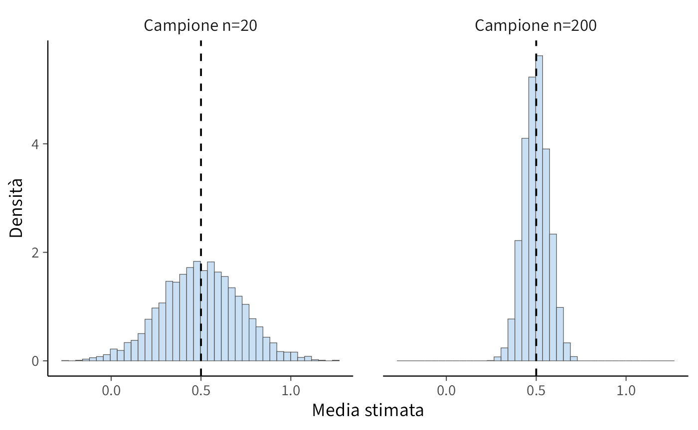

here::here("code", "_common.R") |>
source()
# Load packages
if (!requireNamespace("pacman")) install.packages("pacman")
pacman::p_load(HDInterval)2 Abbracciare l’incertezza
“The only way to cope with uncertainty is to model it probabilistically.”
— Dennis V. Lindley, The Philosophy of Statistics
Introduzione
Fare ricerca psicologica significa confrontarsi costantemente con l’incertezza. Ogni dato che raccogliamo è solo una fotografia parziale e imperfetta della realtà: i comportamenti delle persone variano da un momento all’altro, il campione dei partecipanti non è mai del tutto rappresentativo, gli strumenti di misura introducono inevitabilmente errori, e i contesti in cui osserviamo i fenomeni non sono mai identici. Tutto questo genera variabilità e, di conseguenza, incertezza.
Il compito della statistica è proprio quello di trasformare questa incertezza da ostacolo a risorsa, fornendoci un linguaggio formale per descriverla e strumenti per trarre conclusioni ragionevoli. La tradizione frequentista ha proposto strumenti come i valori-\(p\) e gli intervalli di confidenza. Questi concetti hanno avuto un ruolo fondamentale nello sviluppo delle scienze psicologiche, ma presentano anche limiti importanti: sono difficili da interpretare in modo intuitivo e spesso generano equivoci nelle conclusioni.
L’approccio bayesiano affronta la stessa sfida con un’idea più semplice e potente: rappresentare l’incertezza in termini di distribuzioni di probabilità. In questo modo diventa possibile esprimere direttamente quanto siamo incerti su un parametro o su un’ipotesi, rendendo trasparente il legame tra dati raccolti, modello statistico e inferenze che ne derivano.
In questo capitolo introdurremo dunque la nozione di incertezza, discuteremo i limiti dell’approccio frequentista e vedremo come l’approccio bayesiano offra una prospettiva più chiara e intuitiva per gestire l’incertezza nei dati psicologici.
Panoramica del capitolo
- La psicologia si confronta sempre con variabilità e incertezza nei dati.
- Abbiamo distinto tre forme di incertezza: aleatoria, epistemica, ontologica.
- L’approccio bayesiano offre un modo intuitivo per rappresentare e aggiornare le nostre convinzioni.
- Le credenze iniziali orientano la ricerca, i dati le modificano, le decisioni ne sono il risultato.
- La crisi di replicazione mostra l’importanza di trattare l’incertezza in modo esplicito e trasparente.
2.1 Limiti dell’approccio frequentista
Secondo la prospettiva frequentista, i parametri sono quantità fisse ma sconosciute, e l’unica fonte di incertezza deriva dalla variabilità dei campioni. Questo porta a definizioni che, pur corrette dal punto di vista formale, risultano poco intuitive per chi fa ricerca applicata.
Prendiamo il caso degli intervalli di confidenza. Un intervallo al 95% non significa che il parametro abbia il 95% di probabilità di trovarsi al suo interno. Significa invece che, se ripetessimo lo stesso esperimento un numero infinito di volte, il 95% degli intervalli costruiti in questo modo conterrebbe il vero valore del parametro. In altre parole, l’intervallo cambia a ogni nuovo campione, mentre il parametro rimane fisso. Non sorprende quindi che molti ricercatori interpretino in modo scorretto questa definizione, trattando l’intervallo come se fosse una misura diretta della probabilità sul parametro.
Lo stesso vale per i valori-\(p\). Un \(p\)=0.03 non significa che ci sia il 97% di probabilità che l’ipotesi nulla sia falsa. Significa solo che, se l’ipotesi nulla fosse vera, osserveremmo un risultato uguale o più estremo nel 3% dei casi. Anche qui, il ragionamento si fonda su dati ipotetici che non abbiamo mai osservato, e non sui dati reali che abbiamo davanti.
Queste difficoltà interpretative hanno conseguenze concrete: non è raro che in articoli di psicologia si leggano affermazioni come “con un p<.05 possiamo concludere che l’effetto esiste”, che però non sono giustificate dal significato statistico del test. Inoltre, l’approccio frequentista non ci permette di incorporare in modo diretto conoscenze già disponibili: per esempio, i risultati di studi precedenti o ipotesi teoriche motivate. Di conseguenza, ogni nuovo esperimento viene trattato come se partissimo da zero, senza possibilità di cumulare l’evidenza in maniera coerente.
2.2 Perché un’alternativa bayesiana?
L’approccio bayesiano offre una risposta semplice ed elegante alle difficoltà dell’approccio frequentista. Invece di limitarsi a descrivere l’incertezza dovuta al campionamento, rappresenta in modo esplicito la nostra incertezza sui parametri e sulle ipotesi attraverso distribuzioni di probabilità. Questo ci consente di formulare affermazioni del tipo: “date le nostre ipotesi di partenza e i dati raccolti, c’è il 95% di probabilità che il parametro si trovi in questo intervallo”. Un modo di parlare molto più vicino all’intuizione di chi fa ricerca psicologica, che tende a ragionare direttamente in termini di probabilità sugli effetti.
Un altro vantaggio cruciale è la possibilità di integrare conoscenze pregresse. Nel quadro bayesiano, i risultati di studi precedenti o ipotesi teoriche motivate possono essere incorporati in forma di priori, che vengono poi aggiornati con i nuovi dati per ottenere le posteriori. Questo processo di aggiornamento rende esplicito il meccanismo di accumulazione del sapere scientifico: ogni nuovo studio non parte da zero, ma si innesta in una catena cumulativa di evidenze.
In psicologia questo aspetto è particolarmente importante. Molti effetti sono di piccola entità e gli studi hanno spesso campioni ridotti: ciò significa che ogni singolo esperimento, preso isolatamente, fornisce informazioni limitate. L’approccio bayesiano permette di sfruttare al meglio i dati disponibili, combinando le nuove osservazioni con ciò che già sappiamo, e producendo così inferenze più robuste e cumulative.
Nei capitoli successivi vedremo come questa idea si traduce in pratica: introdurremo le distribuzioni di probabilità come strumento per quantificare l’incertezza, e mostreremo come il metodo bayesiano ci consenta di trasformare intuizioni qualitative in affermazioni statistiche precise.
2.3 L’incertezza come risorsa
Un equivoco comune è pensare all’incertezza come a un problema da eliminare. In realtà, nella pratica scientifica l’incertezza è una risorsa preziosa: ci dice quanto possiamo fidarci delle nostre conclusioni e segnala quando servono ulteriori dati.
L’approccio bayesiano ci permette di rappresentare l’incertezza in modo trasparente. Invece di fornire una stima puntuale isolata, restituisce un’intera distribuzione di valori plausibili, mostrando anche il grado di sostegno che i dati offrono a ciascun valore. L’incertezza non viene nascosta, ma diventa parte integrante della conoscenza scientifica.
2.3.1 Dal dato al modello
In psicologia la variabilità è inevitabile: le persone differiscono tra loro, lo stesso individuo può mostrare stati emotivi diversi in momenti diversi, e gli strumenti di misura non sono mai perfetti. Questa variabilità non è un ostacolo, ma una fonte di informazione preziosa: riflette la natura dinamica e contestuale dei processi psicologici.
Per passare dalla descrizione dei dati all’inferenza sui processi sottostanti, dobbiamo però fare i conti con l’incertezza. Non possiamo mai conoscere con certezza assoluta i “veri” parametri psicologici (ad esempio, il livello reale di ansia di un individuo), perché i dati che raccogliamo sono solo una finestra parziale e rumorosa. Il linguaggio bayesiano ci offre un quadro unificato per affrontare questo problema, combinando in modo esplicito:
- le conoscenze pregresse (prior),
- l’evidenza empirica raccolta (verosimiglianza),
- le credenze aggiornate dopo aver visto i dati (posterior).
Così, ciò che in altri approcci resta implicito diventa trasparente e comunicabile.
2.3.2 Perché l’incertezza è cruciale in psicologia
In discipline come la fisica, le leggi che governano i fenomeni sono relativamente stabili. In psicologia, al contrario, i comportamenti e le esperienze umane sono complessi, influenzati da fattori individuali, sociali e contestuali. L’incertezza non è quindi un fastidio da eliminare, ma un aspetto strutturale da modellare.
La crisi di replicazione in psicologia lo ha mostrato chiaramente: risultati riportati come certi si sono rivelati difficili da riprodurre, e la fiducia eccessiva in valori puntuali ha prodotto interpretazioni fuorvianti. Per affrontare seriamente questa sfida, non basta dire “esiste un effetto medio”: dobbiamo anche comunicare quanto siamo incerti su quell’effetto. L’approccio bayesiano ci offre gli strumenti per farlo in modo diretto e trasparente.
2.4 Fonti di incertezza
Per comprendere meglio la natura dell’incertezza, è utile distinguerne le diverse forme. Questa classificazione non è un esercizio teorico astratto, ma un quadro concettuale che ci aiuta a chiarire i limiti delle nostre conoscenze, ciò che resta imprevedibile e i confini entro i quali operano i nostri modelli. Possiamo distinguere tre tipi fondamentali di incertezza.
2.4.1 Incertezza aleatoria
L’incertezza aleatoria deriva dall’intrinseca imprevedibilità di alcuni fenomeni psicologici. Anche conoscendo tutti i fattori rilevanti, non è possibile prevedere con certezza il comportamento di un singolo individuo in un’occasione specifica. Questa è un’incertezza irriducibile: non può essere eliminata né con strumenti migliori né con più dati.
Un esempio classico proviene dagli studi sull’apprendimento associativo: anche quando un soggetto ha appreso la regola corretta, può occasionalmente rispondere in modo incongruo per ragioni di attenzione o motivazione. Allo stesso modo, in uno studio clinico un paziente può riportare improvvisamente un livello d’ansia più alto senza che ci sia una causa evidente. Questa variabilità “intrinseca” è parte costitutiva dei processi psicologici.
2.4.2 Incertezza epistemica
L’incertezza epistemica dipende dai limiti della nostra conoscenza empirica. Poiché non possiamo osservare l’intera popolazione di interesse né misurare i costrutti psicologici in modo perfetto, ci troviamo a lavorare con dati parziali, campioni limitati e strumenti di misura imperfetti. A differenza dell’incertezza aleatoria, questa forma di incertezza può essere ridotta con un disegno di ricerca più accurato, campioni più ampi o modelli statistici più sofisticati.
Per esempio, stimare il livello medio di ansia negli studenti prima di un esame comporta inevitabilmente un margine di errore: dipende dal numero di studenti inclusi, dalla rappresentatività del campione e dall’affidabilità del questionario usato. Migliorando questi aspetti, l’incertezza epistemica può ridursi.
2.4.3 Incertezza ontologica o modellistica
L’incertezza ontologica riguarda i limiti dei modelli teorici e statistici con cui interpretiamo i dati. Ogni modello è una semplificazione della realtà e non può catturare appieno la complessità del comportamento umano. Questa incertezza non dipende dal numero di dati raccolti, ma dal fatto che la cornice concettuale che usiamo per interpretare i fenomeni è sempre, in parte, riduttiva.
Un esempio è l’uso di un modello di regressione lineare per studiare la relazione tra stress e rendimento accademico: utile per descrivere una tendenza generale, ma incapace di includere tutte le dinamiche temporali, sociali e culturali che influenzano lo studente. Analogamente, in psicometria, un modello a fattori può descrivere bene alcune dimensioni della personalità, ma non esaurire la complessità del costrutto.
2.5 L’incertezza e la crisi di replicazione in psicologia
Negli ultimi decenni la psicologia è stata attraversata da una crisi di replicazione che ha messo in discussione la solidità di molte evidenze considerate affidabili (Collaboration, 2015). Numerosi risultati classici non si sono ripetuti quando sono stati testati con campioni più ampi o disegni più rigorosi. Questa crisi non è solo un problema metodologico: è un segnale epistemologico forte, che ci ricorda come l’incertezza sia stata spesso ignorata o nascosta nella pratica scientifica.
Troppi studi hanno presentato conclusioni come definitive, pur essendo basati su campioni ridotti, strumenti di misura imperfetti e modelli statistici semplificati. In molti casi, le stime puntuali sono state riportate come se fossero valori stabili e sicuri, mentre l’incertezza che le circondava è stata omessa. Questo ha prodotto un’illusione di precisione che ha alimentato aspettative irrealistiche e favorito la diffusione di risultati fragili.
Un fattore cruciale è stato l’uso acritico di test frequentisti: valori-\(p\) interpretati come prove definitive, medie o proporzioni presentate senza alcuna indicazione della loro variabilità, e una sostanziale impossibilità di integrare le nuove evidenze con quelle precedenti. Il risultato è stato un sapere cumulativo debole, in cui ogni studio appariva scollegato dagli altri e facilmente contraddetto da nuove indagini.
L’approccio bayesiano si propone come risposta a questa fragilità: non elimina l’incertezza — cosa impossibile — ma la rende esplicita, quantificata e comunicabile. Invece di offrire un numero unico e definitivo, fornisce una distribuzione di valori plausibili, mostrando con chiarezza quanto un risultato sia robusto e quanto resti ancora incerto. In questo modo diventa più semplice distinguere tra effetti replicabili e consistenti e oscillazioni casuali dovute a campioni piccoli o misurazioni rumorose.
2.5.1 Un esempio concreto
Immaginiamo uno studio che riporti un aumento statisticamente significativo dell’autostima dopo un breve training motivazionale. Nella comunicazione scientifica il risultato potrebbe essere presentato come una scoperta solida, con implicazioni immediate per la pratica applicata. Tuttavia, un’analisi più attenta rivela che il campione era composto da soli 20 partecipanti, che la variabilità individuale era molto alta e che l’effetto stimato — pur significativo nel contesto specifico — era modesto e potenzialmente influenzato da fluttuazioni casuali.
Quando un secondo studio, condotto con un campione più ampio e una procedura metodologicamente più solida, non riesce a replicare lo stesso effetto, diventa evidente la fragilità della conclusione iniziale. Il problema non sta necessariamente nel fatto che il primo studio fosse “sbagliato”: ciò che mancava era una rappresentazione onesta dell’incertezza associata a quella stima. Presentare il risultato come un valore puntuale sicuro ha creato un’illusione di stabilità che i dati non potevano garantire.
2.5.2 Il ruolo dell’approccio bayesiano
L’approccio bayesiano affronta il problema in modo radicalmente diverso. Non promette di eliminare l’incertezza — cosa impossibile — ma la mette al centro del processo inferenziale, rendendola esplicita, quantificata e comunicabile. Invece di fornire una stima puntuale che rischia di essere interpretata come definitiva, restituisce una distribuzione di valori plausibili per il parametro di interesse, con la relativa probabilità attribuita a ciascun valore.
Questa rappresentazione probabilistica offre tre vantaggi fondamentali:
- Trasparenza. Ogni risultato mostra non solo quale sia l’effetto stimato, ma anche quanto siamo incerti a riguardo.
- Cumulatività. Le conoscenze pregresse (studi precedenti, teorie, meta-analisi) possono essere integrate sotto forma di priori, che vengono aggiornate con i nuovi dati per produrre le posteriori.
- Realismo. Invece di un’alternanza di p-value “significativi” o “non significativi”, otteniamo un quadro continuo e graduale della forza dell’evidenza.
In questo modo diventa più semplice distinguere tra effetti replicabili e consistenti, da un lato, e oscillazioni casuali dovute a campioni piccoli o a misure rumorose, dall’altro. L’incertezza non è più un problema da nascondere, ma un’informazione preziosa che rende più robusto e cumulativo il sapere psicologico.

Riflessioni conclusive
Il concetto di incertezza ci obbliga a distinguere tra ciò che osserviamo direttamente (i dati raccolti) e ciò che vogliamo inferire (le proprietà psicologiche latenti, come ansia, autostima o motivazione). In altre parole, l’incertezza è il ponte che collega i nostri dati grezzi alle conclusioni scientifiche. Ignorarla significa creare un’illusione di sicurezza; affrontarla in modo esplicito consente invece di formulare affermazioni più oneste e più utili (Lindley, 2013).
Abbiamo visto che l’incertezza non è un difetto accidentale della ricerca psicologica, ma una sua caratteristica intrinseca: i fenomeni complessi, dinamici e contestuali non si lasciano descrivere in termini deterministici. Per questo abbiamo distinto tre forme fondamentali di incertezza:
- aleatoria, radicata nella variabilità intrinseca dei processi psicologici e non eliminabile;
- epistemica, dovuta ai limiti dei nostri dati e strumenti, riducibile con campioni più ampi e metodi migliori;
- ontologica o modellistica, che deriva dalle semplificazioni inevitabili di ogni modello teorico.
Abbiamo anche visto come la sottovalutazione sistematica dell’incertezza abbia contribuito alla crisi di replicazione: risultati presentati come solidi si sono rivelati fragili, spesso perché mancava una rappresentazione esplicita della loro incertezza. Non si tratta solo di un problema statistico, ma di una questione epistemologica centrale per la psicologia.
L’approccio bayesiano offre una risposta coerente e feconda a questa sfida. Rinuncia all’illusione di una stima unica e definitiva, e descrive invece i parametri attraverso distribuzioni di probabilità. In questo modo:
- rende trasparente la variabilità dei risultati,
- integra conoscenze pregresse e nuove evidenze in modo cumulativo,
- permette di comunicare in termini chiari quanto siamo incerti riguardo a un effetto.
In questo capitolo abbiamo discusso i motivi teorici e concettuali per cui il Bayes è particolarmente adatto a trattare l’incertezza in psicologia. Nel prossimo capitolo vedremo come questa rappresentazione probabilistica funziona in pratica, introducendo le distribuzioni di probabilità attraverso esempi concreti (monete, dadi, fenomeni psicologici) e mostrando come esse rendano operativa la quantificazione dell’incertezza.
Bibliografia
Collaboration, O. S. (2015). Estimating the reproducibility of psychological science. Science, 349(6251), aac4716.
Lindley, D. V. (2013). Understanding uncertainty. John Wiley & Sons.